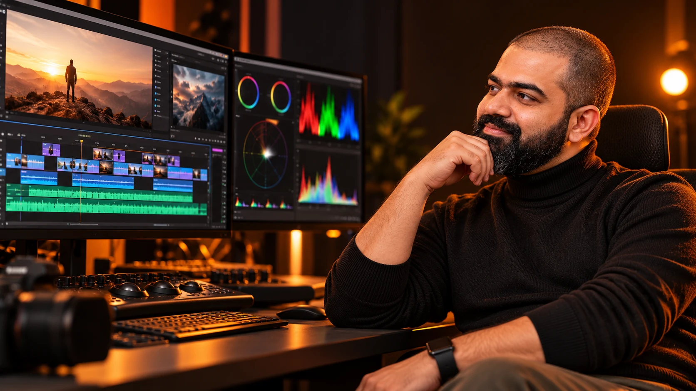

Story or dialogue
Prioritize shot choice, reactions, continuity, sound bridges, clear speech and a meaningful ending.
WEEK 7 · DAY 1 / SESSION 13 / PLAYBOOK
Finish an existing film or advertisement in Filmora with deliberate cuts, rhythm, motion, sound, colour and titles, then compare the rough cut with a fully checked export.
A hands-on Filmora workshop. Bring your project; choose the techniques that serve its story.

Already comfortable with assembly? Move quickly through setup and spend more time on continuity, rhythm, sound and finishing. Need the basics? Begin with the first two passes.
Use the official Homework Doc for decisions, asset links and evidence. Mark a technique N/A with a reason when it does not serve the film.
Prioritize shot choice, reactions, continuity, sound bridges, clear speech and a meaningful ending.
Prioritize reveals, musical phrases, useful speed changes, graphics, action-specific sound and the final message.
Keep your working structure. Diagnose its weakest joins, mix, colour, text or export.
TASK 01 · PRACTICE RECIPE
Choose the edit that needs finishing and protect its original.
Bring in: An earlier film, advertisement or current in-class footage; editable project, source clips, dialogue, music and approved graphics.
Save: Protected rough cut, organized working project and a timestamped edit diagnosis.
Review: The original still opens, required media is online and the chosen project has a clear intended result.
First fix: If media is offline, relink the original files before making new cuts. If the canvas is wrong, check Project Settings before scaling every shot.
TASK 02 · PRACTICE RECIPE
Use the strongest part of each generated clip and make the sequence understandable.
Bring in: Organized source footage, the intended story or message, and the protected rough cut.
Save: A coherent assembly with clean clip boundaries and no accidental black frames.
Review: Every shot adds information or feeling; the opening moves promptly and the ending resolves the message.
First fix: Trim around a local glitch, use a compatible alternate or insert a motivated cutaway. Regenerate only when the essential action is missing or unusable.
TASK 03 · PRACTICE RECIPE
Repair fixable movement without making the scene less believable.
Bring in: The assembly and any alternate angles or cutaways already available.
Save: A continuity pass with each retained repair explained.
Review: No backward speech, implausible physics, visible sync error or new jump in position is introduced.
First fix: Undo the repair and compare an alternate shot. Return to generation when the defect occupies the action the audience must see.
TASK 04 · PRACTICE RECIPE
Control energy while protecting the action the viewer needs to read.
Bring in: A clean sequence and music that suits its mood.
Save: A rhythm pass and either a useful ramp comparison or a recorded reason to retain natural speed.
Review: The important action reads clearly, joins feel intentional, and the edit has no new gaps or overlaps.
First fix: For stuttering, reduce the slowdown or keep 1× motion. Low-frame-rate AI footage does not gain true captured detail by changing export FPS. Optional Optical Flow may help, but inspect edges for warping and export a short test.
TASK 05 · PRACTICE RECIPE
Introduce a title, logo or image without distracting from the film.
Bring in: Locked timing, a permitted transparent graphic or readable title, and the intended ending.
Save: A readable graphic or end frame with deliberate timing.
Review: No title is clipped, distorted, rushed or obscuring the subject; the design still works on a phone.
First fix: Reduce movement, simplify the graphic or remove the effect. Recheck first and last keyframes if the element jumps.
TASK 06 · PRACTICE RECIPE
Make the action and space believable while keeping the mix clear.
Bring in: The settled picture edit, dialogue if present, music, ambience and action-specific sound effects.
Save: A layered mix with clear speech, motivated effects and controlled transitions.
Review: Important words remain understandable, no accidental doubled audio plays, and effects support their visible cause.
First fix: Solo the offending track, shorten or replace the effect, lower its gain and reshape the fade before adding more layers.
TASK 07 · PRACTICE RECIPE
Use sound to connect scenes and make speech easy to follow.
Bring in: A layered mix, two neighboring scenes and dialogue where applicable.
Save: A motivated sound bridge, or an explained clean-cut choice, plus an intelligible mix.
Review: No words are clipped, mouth movement remains in sync and music returns naturally after speech.
First fix: Shorten the overlap or use ambience rather than incompatible dialogue. Reduce ducking or cleanup if it pumps or damages the voice.
TASK 08 · PRACTICE RECIPE
Make neighboring shots feel connected and ensure text is useful.
Bring in: The edited sequence, a representative reference shot and any required titles or captions.
Save: A matched finishing pass and checked on-screen text.
Review: Adjacent shots have a consistent intended mood, subjects retain plausible colour and all retained text is readable and accurate.
First fix: Reset the strongest preset, choose a better reference and correct the individual shot. Simplify text or reposition it inside the safe area.
TASK 09 · PRACTICE RECIPE
Deliver a playable file that matches the intended project.
Bring in: The final timeline, destination requirements and the licensed media used in the edit.
Save: A checked final film and saved editable project with linked media.
Review: The file opens, includes its intended sound and ending, has no accidental black frames or watermark, and uses the expected frame shape.
First fix: If preview is choppy, Render Preview first and compare a short export. If the exported file fails, isolate the failing range or asset, correct it and re-export; never mark the review complete from preview alone.
TASK 10 · PRACTICE RECIPE
Show the improvement and leave the project ready for its next stage.
Bring in: Protected rough cut, checked final export and evidence from the applicable workshop tasks.
Save: Completed homework evidence and an organized film ready for review or the later portfolio.
Review: Rough cut, final film and project backup are traceable; the comparison identifies concrete improvements and honest limitations.
First fix: Replace a general claim such as 'more cinematic' with a timestamp, visible change and reason. Check links before sharing through the instructed channel.
Organize and refine an existing edit through trimming, continuity repairs, keyframes, speed ramps, layered audio, finishing and checked export.
Find action-specific sound effects and suitable music as shown in the source lessons; retain the selected asset's source and applicable license.
Check your installed version and actual asset permissions before relying on a premium effect. Keep the source media with your project.
The session Prompt Vault holds clearly labelled editing practice recipes. No complete official editing-generation prompt was supplied. Use these as practical instructions for your film.
Website progress is saved in this browser. It does not submit the homework or synchronize with the Doc.
The core combines B3 Week 4 Day 2 B3 (01:54–02:38) with the Filmora workflow in Week 3 Day 2 (01:50–02:21) and early assembly and dialogue coverage in Week 2 Day 1. Product examples illustrate techniques; your film supplies the subject.
Colour matching, captions, ducking and optional interpolation are supplementary finishing guidance. They extend the workshop rather than describe an unseen demonstration. Menus can vary with your installed desktop version.